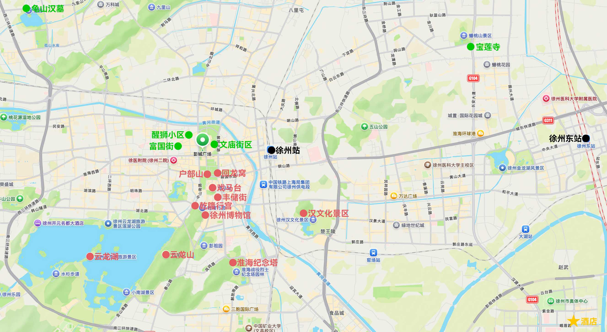

Day 1
🚄 火车 D204
16:09–21:48
苏州 → 徐州
98 元
↓
🍴 徐锦在野 · 破店烧烤
用餐时间：22:00–00:00
餐厅信息：
- 营业时间：16:30–01:00
- 地址：云龙万达
↓
🏨 兰亭西柚精品酒店
地址：徐州市政府新元大道地铁站店
Day 2
🍴 建国刘记米线
用餐时间：08:00–09:00
餐厅信息：
- 地址：兴隆街
🏯 宝莲寺 ⭐️
游玩时间：09:00–11:00
景点信息：
- 开放时间：08:30–17:00（16:30 停止入园）
- 门票：免费
- 导航：宝莲寺停车场入口
备注：
- 仿唐风格建筑群，有全国最大的大雄宝殿。必打卡景点有通天阁、莲池长廊、古建红墙、素面
- 不要踩门槛，不要衣着暴露
- 可免费领取三支香
🍴 怪味愚把子肉
用餐时间：11:00–13:00
餐厅信息：
- 地址：户部山
备注：
- 不吃这个的话可以考虑宝莲寺的素面
🪦 龟山汉墓
游玩时间：13:00–15:00
景点信息：
- 开放时间：08:30–17:30
- 门票：80 元，提前 1 天预约
- 导航：龟山汉墓景区售票处
备注：
- 西汉楚王的地下陵墓
- 可以考虑听讲解，看懂千年古墓的精妙设计
🚏 富国街 & 醒狮小区
游玩时间：15:00–21:00
景点信息：
- 开放时间：全天
- 门票：免费
备注：
- 推荐：糯姐姐
🍴 彭祖美味
用餐时间：17:00–19:00
餐厅信息：
- 地址：醒狮小区
- 推荐：地锅鸡、蒜爆鱼、把子肉
Day 3
🍴 一粥一汤
用餐时间：08:00–09:00
餐厅信息：
- 地址：户部山
- 推荐：彭祖汤、帝王豆粥、水煎包、锅贴饺、萝卜卷、豆腐卷、韭菜盒子、豆沙包
🚏 户部山
游玩时间：09:00–10:00
景点信息：
- 开放时间：全天
- 门票：免费
备注：
- 秋天时的银杏落叶很好看
🚏 戏马台
游玩时间：10:00–11:00
景点信息：
- 开放时间：09:00–17:00
- 门票：免费
- 导航：戏马台（项王路 1 号）
备注：
- 项羽定都彭城操练兵马的古遗址
🚏 回龙窝
游玩时间：11:00–14:00
景点信息：
- 开放时间：全天
- 门票：免费
- 导航：回龙窝历史文化街区（解放区入口）
备注：
- 有很多漂亮的咖啡、甜品、小酒馆、文创店，适合 City Walk
- 晚上比较好看
🍴 老彭城地锅鸡
用餐时间：12:00–14:00
餐厅信息：
- 地址：回龙窝
🏛️ 徐州博物馆 ⭐️
游玩时间：14:00–15:00
景点信息：
- 开放时间：09:00–17:00（16:00 停止入馆，周一闭馆）
- 门票：免费，需提前一周预约
- 导航：徐州博物馆北门
备注：
- 背靠云龙山，馆藏以汉代文物为特色，金缕玉衣、汉代玉器非常值得细看
- 一楼服务台可免费盖纪念章，推荐自带手账本盖章
⛲️ 乾隆行宫
游玩时间：14:30–15:00
景点信息：
- 开放时间：09:00–17:00
- 门票：免费
备注：
- 在徐州博物馆内
⛰️ 云龙山 ⭐️
游玩时间：15:00–16:30
景点信息：
- 开放时间：全天
- 门票：免费
- 导航：云龙山北门（徐州博物馆对面）
备注：
- 紧邻云龙湖的低矮山林，爬山难度不高，登顶可俯瞰整片云龙湖。必打卡景点有放鹤亭、饮鹤泉、观景台、兴化禅寺
- 40 分钟可登顶
- 索道 40 元
🌅 云龙湖 ⭐️
游玩时间：16:30–17:30
景点信息：
- 开放时间：全天
- 门票：免费
- 导航：云龙湖苏公岛停车场
备注：
- 徐州的城市名片，必打卡景点有苏公塔、小南湖、云龙山观景台、水上世界
- 安排在傍晚是为了观赏落日
🍴 晨阳羊肉馆
用餐时间：17:30–19:00
餐厅信息：
- 地址：丰储街
- 推荐：沾水羊肉、炒土豆丝
🚏 丰储街
游玩时间：17:30–21:00
景点信息：
- 开放时间：全天
- 门票：免费
备注：
- 也可以选择去附近的淮海纪念塔，或者折回据说晚上更好看的回龙窝
Day 4
🍴 庆生的早晨
用餐时间：08:00–09:00
餐厅信息：
- 地址：青年路店
🚏 文庙街区
游玩时间：9:00–11:00
景点信息：
- 开放时间：全天
- 门票：免费
🍴 东来土菜馆
用餐时间：11:00–12:30
餐厅信息：
- 地址：云龙万达
🚄 火车 G3751
13:49–15:25
徐州东 → 郑州东
165 元
附录
🚏 景点备选
汉文化景区：
- 开放时间：08:30–17:00
- 门票：80 元
- 导航：徐州汉文化景区南门
淮海战役烈士纪念塔
🍴 餐饮备选
徐州菜：
- 小神厨：
- 推荐：糖醋鱼、芝麻鸡
米线：
- 壹家米线（建国小区店）
羊肉馆：
- 七百岁
把子肉：
- 凤霞把子肉
- 庆坤东坡把子肉
烧烤：
- 贾青烧烤
奶茶：
- 云龙让茶：
- 推荐：清平调
- 汁点江山
- 永民手作
